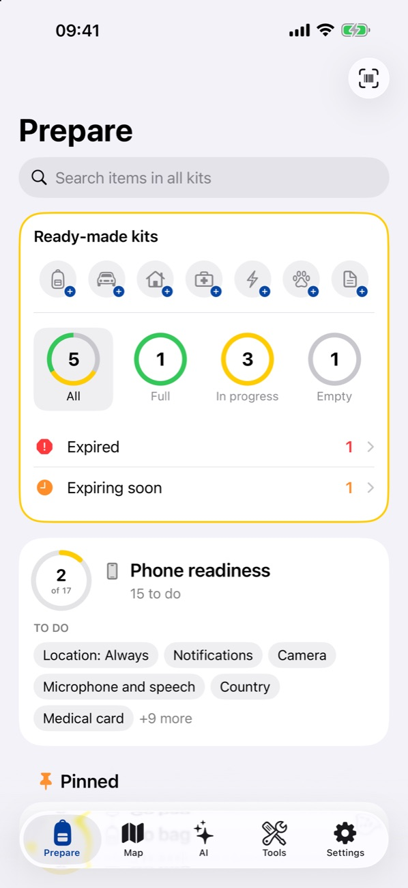
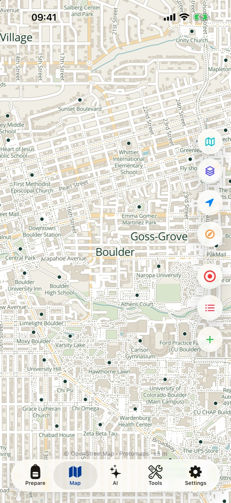
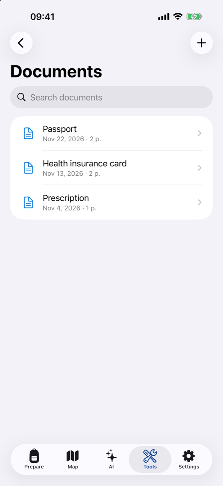
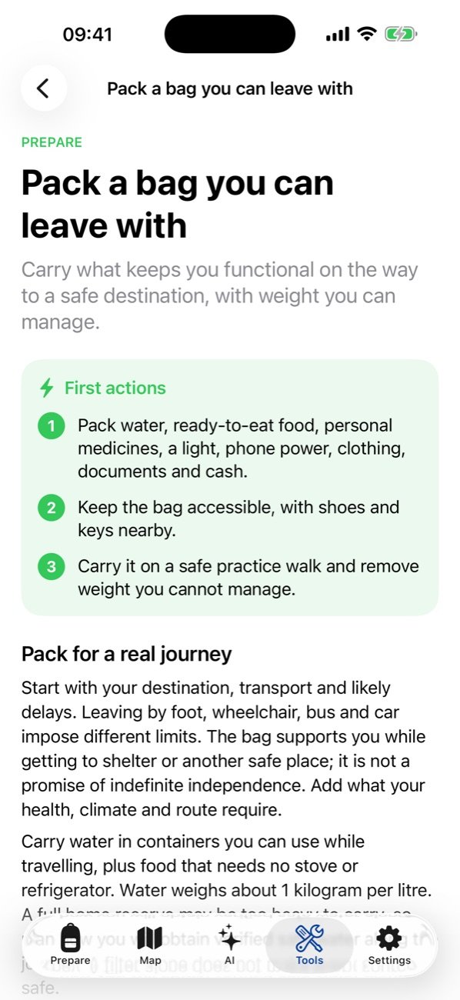

Talverik is not an emergency service. In an emergency, call your local emergency number. Guides and AI answers are general information, not professional advice. Maps are for orientation, not turn-by-turn navigation or complete hazard coverage. Requires iOS 26 or later.
Offline emergency prep for iPhone
Be ready before the lights go out
Kits, expiry reminders, documents, offline maps, practical guides and a private AI — on your iPhone, even with no signal.
- Works offline
- No subscription
- Nothing collected


Prepare
Know what’s packed and what expires
Turn the advice to keep supplies into a kit you actually keep: what to pack, what you have and what is running out.
- Ready-made go bag, home, car and first-aid kits
- Amounts, nested items and barcode search
- Reminders before food, water and batteries expire

Offline maps
Maps that work with no signal
Download a detailed map of your region while you have internet. After that it works anywhere, with no network at all.
- Streets, buildings and important places
- Saved places, GPS tracks and the way back
- Tsunami zones where coverage is provided

Documents
Your papers, locked and ready
Keep scans of the documents you would need after leaving home, on the phone that is always with you.
- Scan with the camera or import PDFs
- Face ID lock
- Searchable text

Private AI
Answers without the internet
A small AI model runs on your iPhone. It answers from the guides when one fits and says so when it is unsure.
- Nothing you ask leaves the phone
- One-time download of about 1.5 GB
- Works on compatible iPhones; it can make mistakes

Guides and tools
Know what to do when it happens
Practical guides with clear first steps, and the tools you reach for when services stop.
- Preparing, emergencies, outdoors and living without services
- Compass, coordinates and Morse light and sound
- Calculators and a journal
Pay once. Yours to keep.
Everything is included and works on your iPhone. Back up to Files or iCloud Drive whenever you like.
One purchaseNo subscription and no in-app purchases.
No accountNothing to sign up for, no ads.
Nothing collectedNo analytics or tracking. Your data stays yours.